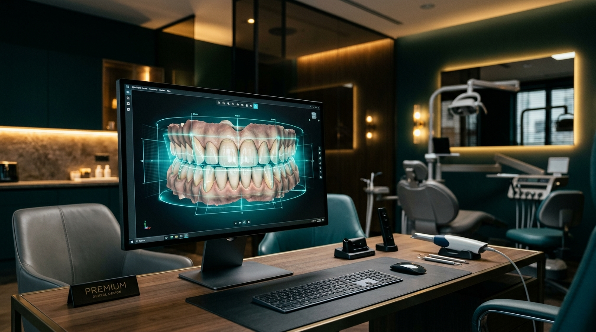

Planejamento 3D

Você vê o resultado antes de decidir.
Antes de qualquer cirurgia, fazemos o planejamento 3D do seu caso, uma simulação real de como vai ficar o seu sorriso. Você não entra numa decisão às cegas.